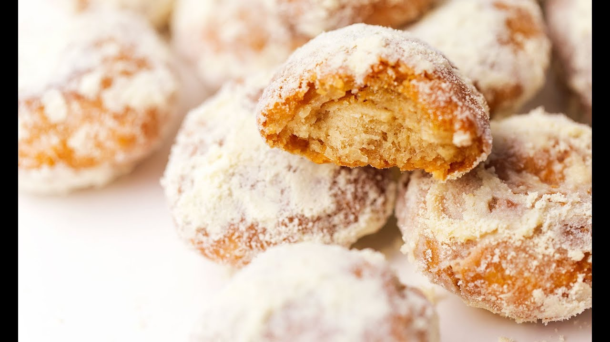

Balushai

Balushai is a traditional Indian sweet, known for its crispy texture and rich flavor. It is made from flour, sugar, and yogurt, and is often flavored with cardamom or saffron.
Ingredients
- 2 cups all-purpose flour
- 1/2 cup sugar
- 1/2 cup yogurt
- 1/4 cup ghee (clarified butter)
- 1/2 tsp cardamom powder
- Oil for deep frying
Instructions
- In a mixing bowl, combine flour, sugar, yogurt, ghee, and cardamom powder. Mix well to form a dough.
- Cover the dough and let it rest for 30 minutes.
- Heat oil in a deep frying pan over medium heat.
- Divide the dough into small balls and flatten them slightly.
- Fry the flattened dough in hot oil until golden brown and crispy.
- Remove and drain on paper towels.